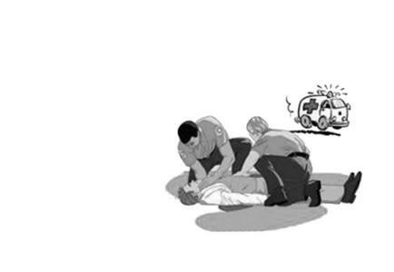

急救知识
First aid knowledge
一：清除口鼻内的异物，帮助倒水。将溺水者救上来以后，马上就清理其口鼻内的杂物，将其舌头拉出，以免舌头堵住喉管，解开衣领，保持呼吸其通畅。然后抱起溺水者的腰部，使其背部朝上，头朝下进行倒水，注意千万不要学影视剧上的直接按压腹部。
二：对呼吸已经很微弱，或者已经停止了的溺水者，要马上进行人工呼吸(此时就不要顾虑性别美丑了）。人工呼吸也就是我们俗称的嘴对嘴吹气，但要注意方式方法。下面是人工呼吸的具体方法：
⑴于一侧托起溺水者下巴，捏住溺水者鼻孔，深吸一口气，然后往溺水者嘴里缓缓吹气。 ⑵：眼睛余光注意溺水者胸腹部，当溺水者胸部有起来时，放松其鼻孔，并且用手压其胸部帮助Ta呼吸。 ⑶：人工呼吸要有规律的进行，并且要长时间的坚持，不能弄到一半就放弃。三：对心跳快要停止或已经停止的溺水者，要进行胸外心脏按压。下面是具体步骤：
四:马上将溺水者送往医院。现场只是简单处理，做完简单救治后不管效果如何，都应立刻将溺水者送往医院，交给专业人士。如果是救护车来了，就交给医生护士，如果是自己送的，在途中也要进行心脏按压和人工呼吸，千万不要停。
